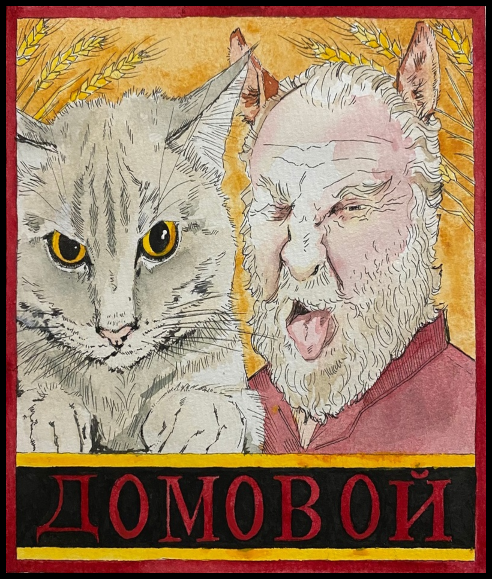

|
Российская конспирология, вопреки всеобщим мнениям, является крайне насыщенной и пополняется на протяжении многих веков. Домовые, гномы, духи леса, водяные, лешие - это все более чем древний фольклор российской культуры, который из историй, легенд и теорий - превратился в неотъемлемую часть культуры.
Что касаемо современной Российской конспирологии, а также конспирологии еще Советских времён, то тут всё не так однозначно, как может показаться на первый взгляд. Дело в том, что с развитием системы интернет, любому желающему открылась возможность к безграннему количеству информации, которое можно было не только впитывать, но и пополнять. Естественно, пополняли далеко не всегда с достоверными доказательствами. Либо они были спорны, либо их не было вообще. Таким образом, накопилось огромное количество различных теорий разного качества, которые необходимо вручную обрабатывать и сортировать. Так и образовался этот проект. Проект является абсолютно некоммерческим, работает безвозмездно и не предполагает под собой истинную информацию. ВСЁ, ЧТО ВЫ ВИДИТЕ НА САЙТЕ - ЛИШЬ ОБРАБОТКА ИНФОРМАЦИИ ИЗ ОТКРЫТЫХ ИСТОЧНИКОВ! |
 |
| 🟢 1 Уровень | 🟡 2 Уровень [НЕДОСТУПЕН] | 🟡 3 Уровень [НЕДОСТУПЕН] | 🟠 4 Уровень [НЕДОСТУПЕН] | 🟠 5 Уровень [НЕДОСТУПЕН] | 🔴 6 Уровень [НЕДОСТУПЕН] | ⚫ 7 Уровень [НЕДОСТУПЕН] | ⚫ 8 Уровень [НЕДОСТУПЕН] |